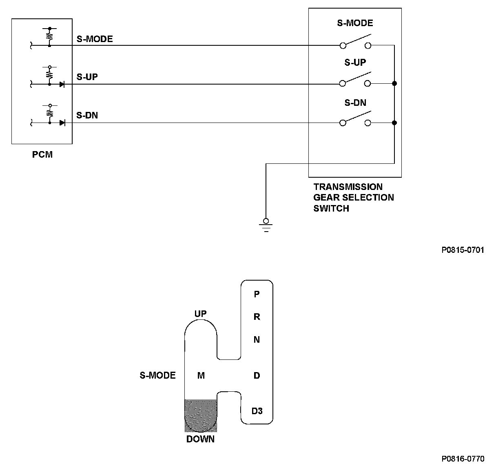
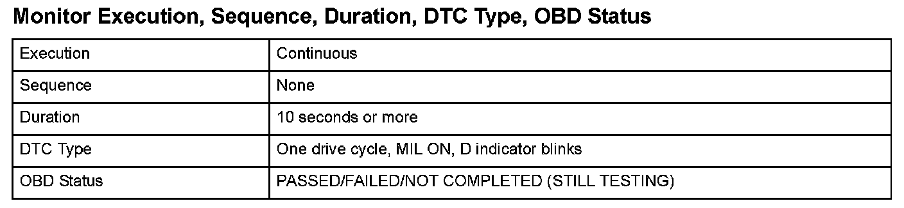
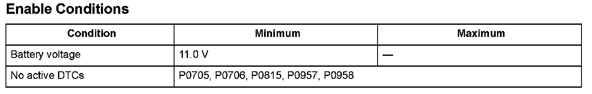

Advanced Diagnostics
DTC P0816: Short in Transmission Gear Selection Switch Downshift Switch Circuit, or Transmission Gear Selection Switch Downshift Switch Stuck ON
General Description
When the shift lever is moved to the M position (the sequential sport shift mode (S-MODE) is selected), the upshift (S-UP) switch and the downshift (S-DN) switch can be used. When the shift lever is moved toward the S-UP switch, an upshift is executed, and when the shift lever is moved toward the S-DN switch, a downshift is executed. The S-MODE switch signal, the S-UP switch signal, and the S-DN switch signal are grounded when turned on and opened when turned off.
When the S-DN switch is turned on in the P, R, N, and D3 positions, a malfunction of the S-DN switch is detected and a DTC is stored.

Monitor Execution, Sequence, Duration, DTC Type, OBD Status

Enable Conditions
Malfunction Threshold
The S-DN switch signal is turned on in the P, R, N, and D3 positions for at least 10 seconds.
Driving Pattern
Start the engine, shift to the P position, and wait for at least 10 seconds.
Diagnosis Details
Conditions for illuminating the MIL
When a malfunction is detected, the MIL comes on and the DTC and the freeze frame data are stored in the PCM memory.
Conditions for clearing the MIL
The MIL will be cleared if the malfunction does not recur during three consecutive trips in which the diagnostic runs.
The MIL, the DTC, and the freeze frame data can be cleared by using the scan tool Clear command or by disconnecting the battery.